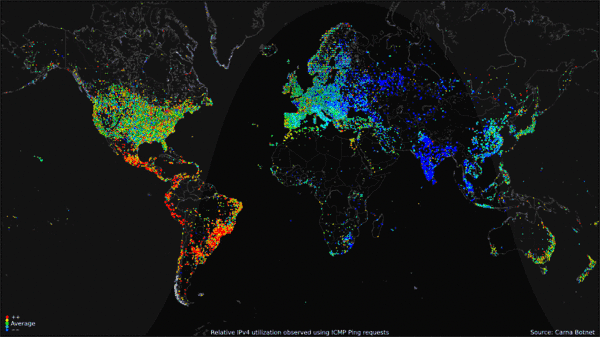

This week - Hacking Finishing up the semester
Interested in a lot of projects going forward. Decided to do capstone on emergent behavior,
focusing primarily on common stystems like traffic and birds, and extending it to
general concepts. Have a lot of other projects I want to work on as well.

White Paper
Wikipedia
Very fascinating project, in which a hacker accessed billions of internet routers worldwide.
He / she then used the data to create a visualization of the internet, over 24 hours.
Need to read more but is generally astounding.
Ideas for digital projects working with paper. One as an extension to the resize
project but with paper folding. As you resize the screen it folds paper origami
style. Another idea is to make another unity game, basic platformer, but based on white paper.
Basically emphasizing the visual style of a shadowbox, and using that as themes for the game.
Another idea was to create some tools for improving internet access. Something to look into more,
but generally interested in the social justice considerations of internet access and wondering
if there are any tools I could make to either act as commentary or improve access. Also want
to make a quick student portfolio site.
Studio
Visually interesting, reminds me of my oil spill project. Presents a procedurally generated logo mark
for a band based on a collection of abstract forms.
Back Home